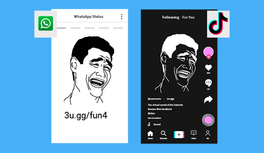
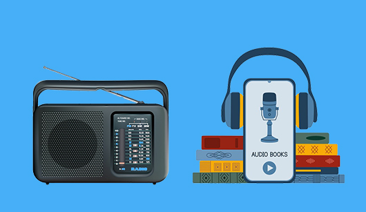
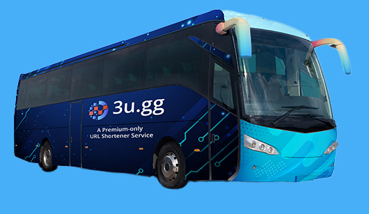
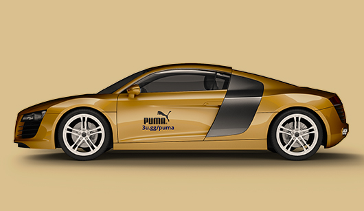
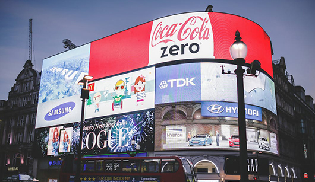

A famous quote taught in marketing classes is “Half my advertising spend is wasted; the trouble is, I don't know which half.” This quote is regularly attributed to either U.S. retail magnate John Wanamaker or to UK industrialist Lord Leverhulme, depending on which side of the Atlantic you were trained.
The problem was partly solved in online advertising by introducing ‘advertisement campaign tracking’, a practice that depends on a adding a list of utm-parameters to the link that gives insight on how, why and where the content reached the viewer. BUT the problem is that most old-style advertising media is ‘non-clickable’ and is still relevant today (TV / Radio Ads, Printed Ads, Bus Ads). The problem is further exacerbated by the fact that most newer media is still ‘non-clickable’ and there is no easy way to introduce campaign tracking when the link is ‘non-clickable’.
‘Viral Media’ is any media which one user can forward to another one. It can be on the same platform (like tiktok to tiktok) or from one platform to another (like from tiktok to WhatsApp).
Wikipedia defines the term ‘Viral’ as “The term viral pertains to a video, image, or written content spreading to numerous online users within a short time period.”
It further says: In media studies and marketing, spreadability is the wide distribution and circulation of information on media platforms.
Henry Jenkins in his book “Spreadable Media: Creating Value and Meaning in a Networked Culture" described how “corporate control over media content and its distribution have been replaced by the age of what the digital media industries have called “user-generated content.” Spreadable Media maps these fundamental changes, and gives readers a comprehensive look into the rise of participatory culture”
What this blog emphasizes is that most common viral or spreadable media are ‘non-clickable’; media that does not allow the viewer to click on the links. That does not allow any advertisement campaign tracking and the blogs ends with introducing a new technological solution to the problem.
Campaign Tracking Challenges in Non-Clickable Media
Forwarding and sharing media online with others can be ‘by copy’ (actual media is sent in the message) or it can be ‘by link’ (where the media is hosted on a server and only the link is forwarded).
If it is by-link, then it gives the advertiser a chance to put more content about the media and especially an ability to put clickable links for its calls-to-actions (e.g. in YouTube video descriptions).
But most spreadable and viral media is shared ‘by-copy’ and that does not allow the advertiser any such chance to add CTA links. This poses technological challenges for advertisers on how to add CTAs in their Ads.
Visual Media
Video Ads
Most popular video format is short-videos which are usually forwarded by copy on the same platform or on a different platform. Such videos do not allow the advertiser to put any detailed text about the video on the hosted link (like YouTube). Any links mentioned also need to be copied by manual typing or at times through memory.
Memes
Memes remain the most popular format among the users. Meme is usually just a static image and that fact makes it easiest for users to forward and share with others. Again any link are statically written and have to be manually typed or at times through memory.
Printed Paper
Printed paper is still a significant portion of advertising media. By design, all links are non-clickable and hence need to be typed manually.
Recorded Presentations
A mix of printed media and recorded videos, this special type which is the source of all webcasts and other related media, remain non-clickable for their CTA links and hence requires CTA links to be memorized or typed by hand.
Aural Media
Radio Ads and Audio Books
Long commute times and other factors have contributed significantly for a change of users behavior from viewing to listening; whether it be listening to old-style Ads on radio or the more modern trend of Audio Books. All audio formats by design are non-clickable and users have to rely on their memory to be able to visit the links mentioned.
Podcasts
Podcasts are another media getting very popular and hence one of the top spreadable and viral media now. By design, its aural nature requires any links be non-clickable and users have to relying on memory to be able to manually type them.
Transient Media
Transient media is any media whether visual or aural that is available only for a short-time. This poses further challenges on the CTA as it requires committing something to the target’s memory in a short-time. As an example 1-800-DENTIST is so much easier to commit to one’s memory than ‘Call 1-847-285-6925 for dentist appointment’ on a transient media. Transient media includes:
Fleet Media and Bus Advertising
Any advertising media displayed on trucks, buses is non-clickable
Car Wraps
Many companies offering full vinyl covers that users can put on their cars. The media remain transient and non-clickable.
Billboards
Billboards whether moving or fixed remain non-clickable and hence pose the challenge of putting the CTA link into the viewer’s memory.
Radio and TV Ads
Radio and TV Ads are transient and need to show a link which remains non-clickable and hence needs to be typed manually.

In-Person Presentations
Unless users have access to offline recordings, all in-person presentations are transient in nature and do not allow clickable CTA links. The attendees need to commit the links to memory and manually type later.
Workarounds for non-clickable media
As much as companies wanted to have detailed tracking on their advertisement, the technology didn’t allow much room. Just sending the user to the company page was considered sufficient return considering the non-clickable nature of media. Vanity toll-free numbers like 1-800-FLOWERS, or 1-800-GoFedEx, or 1-800-DENTIST are all relics of that past.
Internet brought the change to directing viewers onto company’s domain name where they are expected to navigate to the ‘Contact Page’.
The trouble stems from the fact that any call-to-action links are non-clickable and there is no space to mention any detailed tracking of which campaign resulted in the end-user reaching its target.
Campaign Tracking for Non-Clickable Media
When dealing with Non-Clickable Media, advertisers need to rely on something that the user can type by hand. If the media is visual (video, meme, printed paper), the user can look back and forth and type the link in the browser. If the media is aural (pos casts, audio books), the user needs to listen. Further challenge with transient media (visual or aural) is the need for user to commit the link to its memory.
Such advertising therefore has been restricted to just promoting the overall brand name. Ads then just mention the domain name of the brand which the viewer can then type in the browser.
The problem was partially solved by using short-URLs, they are by design short and solve few of the above problems.
Usability Challenges
Usability for short URLs mean easy memorization and manual typing. Most short URL services offer short URLs which are case-sensitive. /McDonalds needs to be typed as such. /MCDONALDS or /mcdonalds or /MCDonalds will all point to different targets or throw a 404 error. Not with 3u.gg
All short URLs with 3u.gg are case-insensitive. Once you book your short-URL, all case variations will point to your target URL. 3u.gg/McDonalds, 3u.gg/mcdonalds, 3u.gg/MCDonalds and 3u.gg/MCDONALDS all point to https://mcdonalds.com
Short-URLs of your choice
3u.gg allows selecting URLs of your choice (subject to availability). As of this writing (Jan 2024), five character and some four character short-URLs are still available.
The system allows you to choose dictionary-word combinations for easy memorization like 3u.gg/ my-fav-talc or other shortest URLs containing your desired word patterns.
Built-in Campaign Tracking
This will allow you almost unlimited tracking and your advertising campaigns e.g. 3u.gg/co/xyz
Company Prefix URLs
Two and three character company prefixes are available like: 3u.gg/co/ Once you reserve a company prefix, you can generate as many short URLs in your own private area.